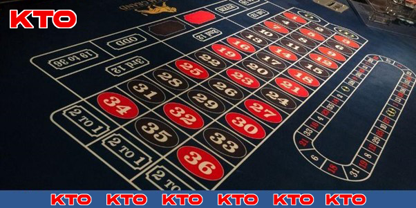

Roulette kiểu Pháp – Game hấp dẫn giải trí ăn tiền thật
Roulette kiểu Pháp mang đến một trải nghiệm giải trí vô cùng hấp dẫn và lôi cuốn. Được phát triển bởi Net Entertainment, game này nổi bật với thiết kế hấp dẫn và cung cấp nhiều loại cược phong phú. Cùng KTO tìm hiểu chi tiết về quy tắc, bàn chơi cũng như bí quyết thắng lớn từ chuyên gia qua bài viết dưới đây.
Giới thiệu chung về Roulette kiểu Pháp
Roulette Pháp là một game đánh bài rất được ưa chuộng trên toàn thế giới, ngay cả với những người chưa từng đến đất nước này. Bố cục bàn Roulette Pháp là lựa chọn hàng đầu của nhiều người khi đến sòng bạc, dù trực tuyến hay trực tiếp.
Game này có cách chơi đơn giản là bạn chỉ cần đặt cược vào các ô số trên bàn quay, sau đó chờ quả bóng rơi vào ô số để xác định kết quả. Tính ngẫu nhiên của việc quả bóng rơi vào ô nào đảm bảo sự công bằng, không bị can thiệp từ nhà cái.
Sự phổ biến của trò đánh bài online ăn tiền thật này còn nhờ vào lợi thế nhà cái thấp hơn. Bet thủ có cơ hội chiến thắng cao hơn so với các trò chơi bài khác. Lợi thế của nhà cái trong Roulette kiểu Pháp chỉ là 2,7%, nhưng Roulette Mỹ có lợi thế nhà cái lên đến 5,3%. Điều này là do Roulette online Pháp chỉ có một số 0, ít hơn so với phiên bản Mỹ.
Ngày càng nhiều người tham gia sân chơi tại các sòng bạc trực tuyến. Tựa game mang lại cơ hội thắng cao và có hình thức chơi và quy cách trả thưởng độc đáo. Bet thủ không cần đến trực tiếp các casino, chỉ cần một cú click chuột là có thể bắt đầu chơi Roulette kiểu Pháp.

Khái quát về Roulette kiểu Pháp
Hướng dẫn chơi Roulette kiểu Pháp dành cho tân thủ
Mặc dù trò này có cách chơi đơn giản nhưng đối với người mới bắt đầu thì quy tắc cũng như các loại cược rất phức tạp. Dưới đây là cách chơi đã được đơn giản hóa mà bạn nên tham khảo:
Quy tắc
Roulette là một trò chơi sòng bạc bao gồm một bánh xe có 38 số: từ 1 đến 36, 0 và 00. Sau khi tất cả bet thủ đã hoàn tất việc đặt cược, người điều khiển ván đấu sẽ thả một quả bóng trên mép ngoài của bánh xe.
Khi bánh xe quay, bóng sẽ di chuyển, cuối cùng rơi vào một trong các rãnh số khi vòng quay chậm lại và dừng hẳn. Người chơi đặt cược vào con số mà quả bóng dừng lại sẽ giành chiến thắng.
- En Prison (Trong tù): Khi số 0 xuất hiện, cược bên ngoài của bạn sẽ được giữ lại trên bàn để quay thêm một vòng. Nếu số 0 lại có trong vòng quay này, tiền của bạn sẽ bị mất. Nếu quả bóng rơi vào bất kỳ số nào khác, kết quả sẽ được quyết định như bình thường.
- La Partage (Chia sẻ): Khi số 0 xuất hiện, bạn sẽ chỉ mất một nửa số tiền cược bên ngoài của mình. Phần còn lại sẽ được trả lại để bạn đặt trong lần quay tiếp theo.
Cả hai quy tắc này đều mang lại lợi thế toán học tương đương với tỷ lệ cược của roulette Châu Âu, giúp tăng cơ hội thắng và làm cho game thêm phần hấp dẫn.

Quy tắc quan trọng trong trò Roulette kiểu Pháp
Cách chơi căn bản
Sau là 4 bước chơi dành cho người mới bắt đầu để tăng khả năng thắng cuộc:
- Bước 1: Bet thủ cần làm quen với thuật ngữ Roulette kiểu Pháp chẳng hạn như “orphelins” và “voisins du zero”, pair/impair và các nhóm số 1-18 hoặc 19-36 (manque/passe). Với lợi thế nhà cái chỉ 1,35%, bạn nên dành thời gian để làm quen với những thuật ngữ này.
- Bước 2: Game có nhiều loại cược, từ cược ngoài như đỏ/đen hoặc chẵn/lẻ đến các loại mạo hiểm hơn trên các số cụ thể. Điều quan trọng là người chơi xác định quy mô cược phù hợp với tài khoản của bạn, sau đó từ từ tìm cách tăng số tiền thắng.
- Bước 3: Khi quay roulette Pháp trực tuyến, bạn dành thời gian để đặt cược trước khi nhấn nút quay (Spin). Chỉ ấn nút khi bạn đã sẵn sàng bắt đầu vòng quay, thường thì ô này không được dịch sang tiếng Pháp.
- Bước 4: Trong roulette online, các khoản thanh toán và thua lỗ được xử lý tự động, giúp bạn dễ dàng theo dõi tài khoản của mình. Bet thủ kiểm tra tình hình tài chính giữa các lần đặt cược. Nếu bạn thấy mình đang thua thì cân nhắc dừng lại để tránh tổn thất lớn.
4 bước quay Roulette kiểu Pháp mà bạn cần nắm
Các loại cược có trong Roulette kiểu Pháp
Trong Roulette Paris, có nhiều loại cược cơ bản mà bạn có thể thực hiện, dựa trên kết quả của mỗi vòng quay. Các loại này được chia thành cược bên trong và bên ngoài như sau:
Cược bên trong
- Cược thẳng: Một số duy nhất trong số 36 số có sẵn.
- Cược hai số: Hai số liền kề trên lưới.
- Cược ba số (Street): Một hàng ba số.
- Cược góc (Corner): Nhóm bốn số.
- Cược dòng (Line): Hai hàng số liền kề.
Cược bên ngoài
Khi chơi Roulette kiểu Pháp, bạn sẽ thấy các cược bên ngoài được ghi bằng tiếng Pháp trên bàn chơi. Các cược này bao gồm:
- Cược cột: Chọn một trong ba cột số – tỷ lệ trả thưởng 2:1.
- Douzaine (Cược tá): Đặt cược vào một trong ba nhóm 12 số, gồm Premier (đầu tiên), Moyenne (thứ hai) hoặc Dernière (thứ ba). Các nhóm này thường được ký hiệu là 12P, 12M hoặc 12D.
- Rouge / Noir (Đỏ / Đen): Chọn số đỏ hoặc đen.
- Pair / Impair (Chẵn / Lẻ): Chọn các số chẵn hoặc lẻ.
- Manque / Passe (Thấp / Cao): Đặt các số từ 1-18 (Manque) hoặc 19-36 (Passe).

Cược bàn ngoài có đa dạng loại cược hơn trong game Roulette kiểu Pháp
Biết điểm dừng
Quản lý vốn thông minh là chìa khóa quan trọng để thành công trong việc chơi Roulette. Trước khi bắt đầu chơi, bet thủ xác định một ngân sách cố định mà bạn sẽ dành cho việc chơi Roulette. Đảm bảo rằng số tiền này là bạn có thể tự chịu đựng để mất mà không ảnh hưởng đến tài chính cá nhân.
Quan trọng hơn cả là tuân thủ theo nó và không bao giờ vượt quá số tiền bạn đã quyết định để đầu tư vào trò chơi.Thay vì đặt cược toàn bộ số tiền vào một lần chơi, người chơi chia nhỏ ngân sách thành các khoản nhỏ hơn và đặt theo từng khoản.
Nếu bạn đạt được mục tiêu lợi nhuận đề ra hoặc cảm thấy bản thân đang mất quá nhiều, dừng lại và rút lui là lựa chọn đúng. Đừng cố gắng bù đắp lỗ hỏng bằng cách đặt tiền lớn hơn hoặc tiếp tục chơi khi không còn kiểm soát được tình hình.
Bài viết trên khái quát về Roulette kiểu Pháp cũng như cách chơi, các loại cược và mẹo hiệu quả dành cho tân thủ, Hy vọng với những thông tin hữu ích mà KTO cung cấp, bạn hiểu rõ hơn về game này và thắng lớn khi tham gia.